For cases where the iterative scheme does not reach the necessary accuracy, or whenever a more general null hypothesis is considered, the TISEAN package offers an implementation of the constrained randomisation algorithm using a cost function minimised by simulated annealing, as introduced in Ref. [26] and described in Sec. 5. Since one of the main advantages of the approach is its flexibility, the implementation more resembles a toolbox than a single program. The main driving routine randomize takes care of the data input and output and operates the simulated annealing procedure. It must be linked together with modules that implement a cooling schedule, a cost function, and a permutation scheme. Within TISEAN, several choices for each of these are already implemented but it is relatively easy to add individual variants or completely different cost functions, cooling or permutation schemes. With the development structure provided, the final executables will then have names reflecting the components linked together, in the form randomize_A_B_C, where A is a cost function module, B a cooling scheme, and C a permutation scheme.
Currently, two permutation schemes are implemented. In general, one will use a scheme random that selects a pair at random. It is, however, possible to specify a list of points to be excluded from the permutations. This is useful when the time series contains artifacts or some data points are missing and have been replaced by dummy values. It is planned to add a temperature-sensitive scheme that selects pairs close in magnitude at low temperatures. For certain cost functions (e.g. the spike train spectrum), an update can only be carried out efficiently if two consecutive points are exchanged. This is implemented in an alternative permutation scheme event.
The only cooling scheme supported in the present version of TISEAN (2.0) is
exponential cooling (exp). This means that whenever a certain condition
is reached, the temperature is multiplied by a factor 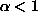. Apart from
 and the initial temperature
and the initial temperature  , two important parameters control
the cooling schedule. Cooling is performed either if a maximal total number of
trials 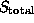 is exceeded, or if a maximal number
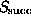 of trials has been successfull since the last
cooling. Finally, a minimal number of successes 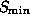 can be
specified below which the procedure is considered to be ``stuck''. All these
parameters can be specified explicitly. However, it is sometimes very
difficult to derive reasonable values except by trial and error. Slow cooling
is necessary if the desired accuracy of the constraint is high. It seems
reasonable to increase and
with the system size, but also with the number of constraints incorporated in
the cost function. It can be convenient to use an automatic scheme that starts
with fast parameter settings and re-starts the procedure with slower settings
whenever it gets stuck, until a desired accuracy is reached. The initial
temperature can be selected automatically using the following algorithm. Start
with an arbitrary small initial temperature. Let the system evolve for
steps (or successes). If
less than 2/3 of the trials were successes, increase the initial temperature by
a factor of ten to ``melt'' the system. This procedure is repeated until more
than 2/3 successes are reached. This ensures that we start with a temperature
that is high enough to leave all false minima. If the automatic scheme gets
stuck (the low temperature allows too few changes to take place), it re-starts
at the determined melting temperature. At the same time, the cooling rate is
decreased by 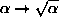, and 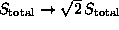. We suggest to create one surrogate with
the automatic scheme and then use the final values of
, two important parameters control
the cooling schedule. Cooling is performed either if a maximal total number of
trials 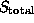 is exceeded, or if a maximal number
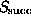 of trials has been successfull since the last
cooling. Finally, a minimal number of successes 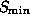 can be
specified below which the procedure is considered to be ``stuck''. All these
parameters can be specified explicitly. However, it is sometimes very
difficult to derive reasonable values except by trial and error. Slow cooling
is necessary if the desired accuracy of the constraint is high. It seems
reasonable to increase and
with the system size, but also with the number of constraints incorporated in
the cost function. It can be convenient to use an automatic scheme that starts
with fast parameter settings and re-starts the procedure with slower settings
whenever it gets stuck, until a desired accuracy is reached. The initial
temperature can be selected automatically using the following algorithm. Start
with an arbitrary small initial temperature. Let the system evolve for
steps (or successes). If
less than 2/3 of the trials were successes, increase the initial temperature by
a factor of ten to ``melt'' the system. This procedure is repeated until more
than 2/3 successes are reached. This ensures that we start with a temperature
that is high enough to leave all false minima. If the automatic scheme gets
stuck (the low temperature allows too few changes to take place), it re-starts
at the determined melting temperature. At the same time, the cooling rate is
decreased by 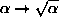, and 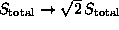. We suggest to create one surrogate with
the automatic scheme and then use the final values of  ,
,  and
for subsequent runs. Of course, other more
sophisticated cooling schemes may be suitable depending on the specific
situation. The reader is referred to the standard literature [38].
and
for subsequent runs. Of course, other more
sophisticated cooling schemes may be suitable depending on the specific
situation. The reader is referred to the standard literature [38].
Several cost functions are currently implemented in TISEAN. Each of them is of
the general form (22) and the constraints can be matched
in either the  ,
,  , or the 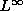 (or maximum) norms.
In the
, or the 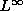 (or maximum) norms.
In the  and
and  norms, autocorrelations are weighted by
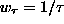 and frequencies by 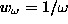.
norms, autocorrelations are weighted by
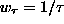 and frequencies by 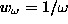.
Autocorrelations (auto, or a periodic version autop) are the most
common constraints available. Apart from the type of
average, one has to specify the maximal lag  (see
e.g. Eq.(23)). This can save a substantial fraction of the
computation time if only short range correlations are present. For each
update, only
(see
e.g. Eq.(23)). This can save a substantial fraction of the
computation time if only short range correlations are present. For each
update, only  terms have to be updated.
terms have to be updated.
For unevenly sampled data (see Sec. 6.3), the cost function
uneven implements binned autocorrelations as defined by
Eq.(26). The update of the histogram at each annealing step takes
a number of steps proportional to the number of bins. The user has to specify
the bin size  and the total lag time covered contiguously by the bins.
and the total lag time covered contiguously by the bins.
For surrogate spike trains, either the spike train peridogram Eq.(28) or binned correlations Eq.(29) can be used. In the former case, the cost function is coded in spikespec. The user has to give the total number of frequencies and the frequency resolution. Internally, the event times 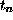 are used. A computationally feasible update is only possible if two consecutive intervals 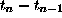 and 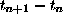 are exchanged by 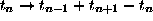 (done by the permutation scheme event). As a consequence, coverage of permutation space is quite inefficient. With binned autocorrelations spikeauto, intervals are kept internally and any two intervals may be swapped, using the standard permutation scheme random.
The documentation distributed with the TISEAN package describes how to add further cost functions. Essentially, one needs to provide cost function specific option parsing and input/output functions, a module that computes the full cost function and one that performs an update upon permutation. The latter should be coded very carefully. First it is the single spot that uses most of the computation time and second, it must keep the cost function consistent for all possible permutations. It is advisable to make extensive tests against freshly computed cost functions before entering production.
In future releases of TISEAN, it is planned to include routines for cross correlations in mutivariate data, multivariate spike trains, and mixed signals. We hope that users take the present modular implementation as a starting point for the implementation of other null hypotheses.